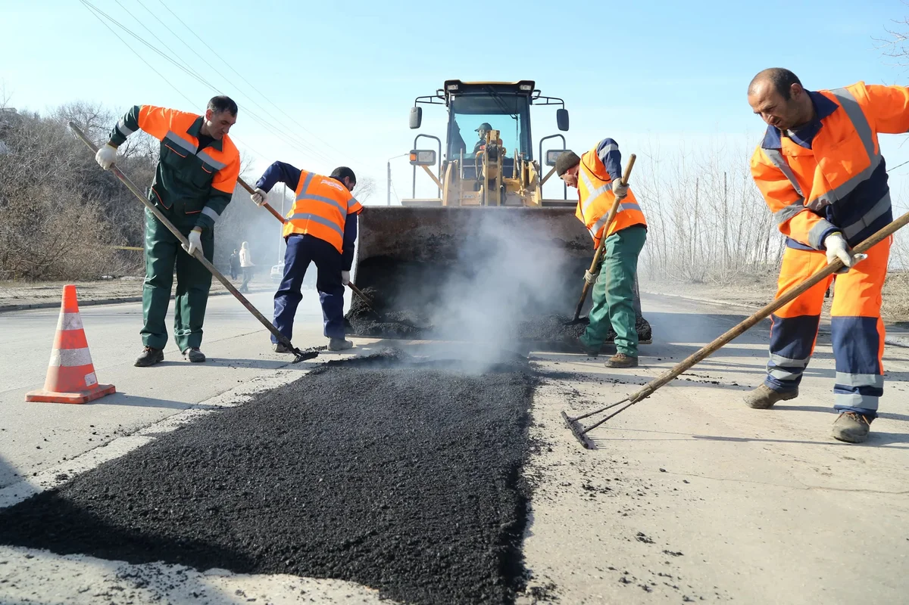

Разнорабочие на дорожные работы
 Разнорабочие на дорожные работыК обустройству дорожного полотна требуется наем различных сотрудников. Возведение требует определение типа дороги и почвы, проведения инженерных вычислений. Также потребуется значительный опыт и оперативное выполнение. У нас есть разнорабочие на дорожные работы в Москве по разумной цене.
Когда нужны рабочие на ремонт дорогНаша компания предоставит сотрудников для выполнения различных задач, включая:
- Капитальный ремонт дорожного полотна.
- Укладка тонкого бетона.
- Обустройство щебеночного основания.
- Обустройство песчаного основания.
- Обустройство дорожного полотна с помощью асфальтовой крошки.
- Выполнение ямочного ремонта дорог.
- Выполнение дорожной разметки.
Список задач может быть расширен. Позвоните по указанному номеру на сайте для уточнения, можно ли найти рабочих на дорожные работы под Ваши потребности. Менеджер компании прекрасно знает квалификацию штата сотрудников и предоставит развернутую информацию по их опыту и возможностям.
Дорожные рабочие: аутсорсингСтроительство дорожного полотна и ремонт требует значительного количества рабочих рук. Однако найти их не так просто. Особенно в короткие сроки. Вы можете обратиться в нашу компанию. Мы предоставляем:
- Оптимальные цены на сотрудников. Вы сможете точно рассчитать стоимость услуг наших рабочих. При крупных заказах предоставляем скидки с кэшбеком.
- Нужное количество работников без проволочек и ожиданий. Вы в короткие сроки сможете получить целый штат на выполнение поставленных задач.
- Опытных и квалифицированных кадров. Только граждане РФ, получившие необходимые знания и опыт. Регулярно проводим среди сотрудников повышение квалификации.
- Поддержка 24/7. Обратиться к нам можно даже в праздники или ночью. Оперативно предоставим работников.
- Стабильный штаб сотрудников. Рабочие не меняются без объективной необходимости.
- Сотрудники имеют собственную форму и необходимую экипировку. Приезжают на объект самостоятельно.
- Составляем индивидуальный график работы для выполнения задач по требованиям заказчика.
Мы работаем в Москве. При необходимости предоставления сотрудников в другие регионы обратитесь к нашему менеджеру. Он оценит возможности отправки работников.
Удобное оформление заказов и оплата - наличные и безналичные платежиНаша компания сотрудничает как с физическими лицами и индивидуальными предпринимателями, так и с крупными компаниями. Для удобства мы предоставляем два способа расчета: наличный и безналичный. При этом подготавливаем все необходимые документы. Это позволяет официально и без проволочек устроить работников для выполнения задач на месте. Заказ оформляется по телефону +7(495) 133-59-13 и по электронной почте info@personalmsk.ru. Сообщите количество работников, для каких задач нужны и сроки их выполнения. Мы рассчитаем стоимость оказания услуг и отправим их по указанному адресу в нужное время.
10.08.2022